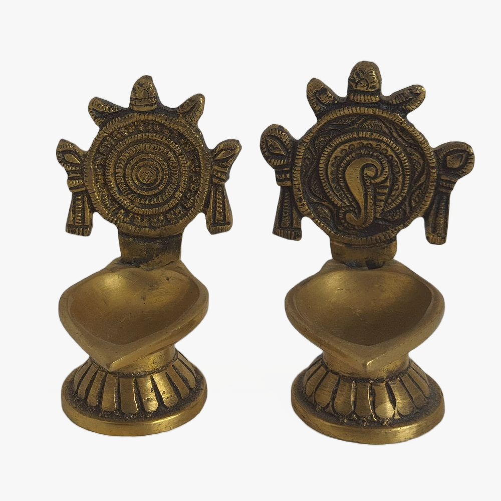
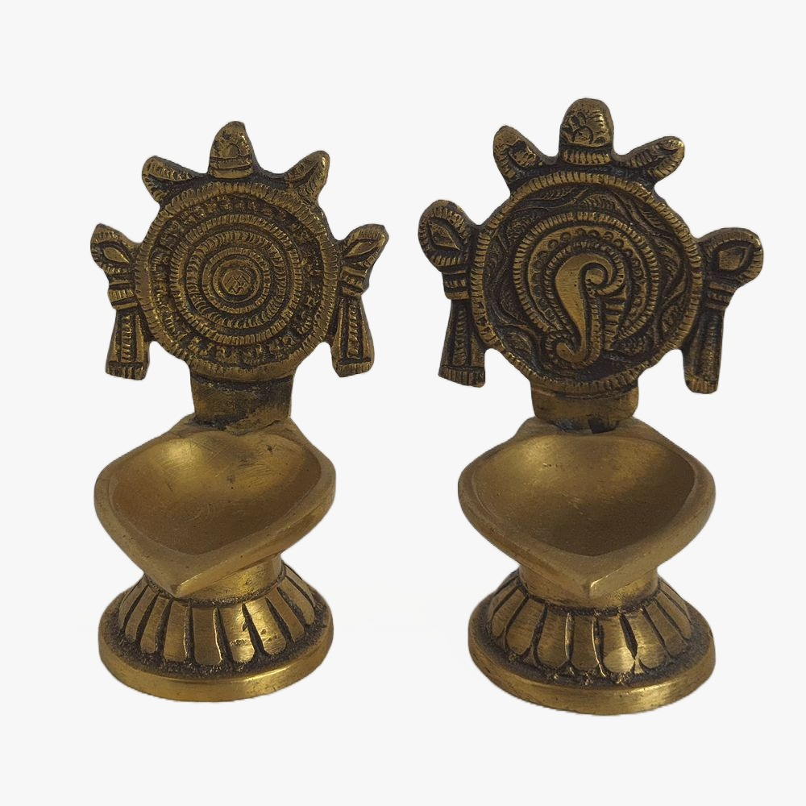

For all these puja ceremonies certain Samagri Puja items
or accessories are used Such as Puja Thali to place Flowers, rice,
inscense sticks, kum kum, Haldi, Sandalwood paste, Bell, choupala, etc.
Diyas or oil lamps are used as the source of light and decoration for Puja.

 
